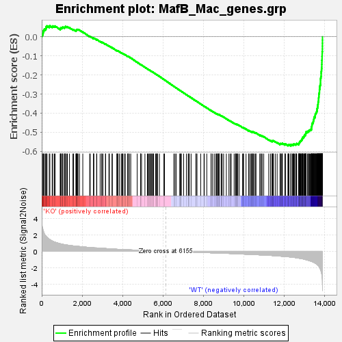
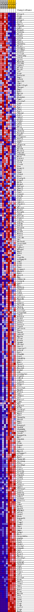
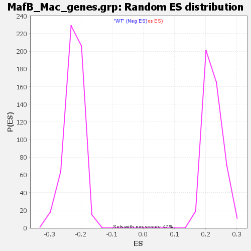

| | | Dataset | COUNTS_GSEA_Filtered.WT_vs_KO.cls#KO_versus_WT |
| Phenotype | WT_vs_KO.cls#KO_versus_WT |
| Upregulated in class | WT |
| GeneSet | MafB_Mac_genes.grp |
| Enrichment Score (ES) | -0.57132405 |
| Normalized Enrichment Score (NES) | -2.5523686 |
| Nominal p-value | 0.0 |
| FDR q-value | 0.0 |
| FWER p-Value | 0.0 |
Table: GSEA Results Summary

Fig 1: Enrichment plot: MafB_Mac_genes.grp
Profile of the Running ES Score & Positions of GeneSet Members on the Rank Ordered List
| SYMBOL | TITLE | RANK IN GENE LIST | RANK METRIC SCORE | RUNNING ES | CORE ENRICHMENT | | 1 | P2ry13 | na | 8 | 3.627 | 0.0128 | No |
| 2 | Pltp | na | 62 | 2.591 | 0.0185 | No |
| 3 | Cd86 | na | 73 | 2.517 | 0.0270 | No |
| 4 | P2ry12 | na | 97 | 2.350 | 0.0340 | No |
| 5 | Klf9 | na | 131 | 2.133 | 0.0394 | No |
| 6 | Dmxl2 | na | 194 | 1.878 | 0.0418 | No |
| 7 | Zfp658 | na | 215 | 1.834 | 0.0471 | No |
| 8 | Gab1 | na | 222 | 1.813 | 0.0534 | No |
| 9 | Entpd1 | na | 265 | 1.685 | 0.0565 | No |
| 10 | Tent5a | na | 374 | 1.454 | 0.0539 | No |
| 11 | Nr1d1 | na | 402 | 1.426 | 0.0572 | No |
| 12 | Cd302 | na | 518 | 1.269 | 0.0534 | No |
| 13 | Cd164 | na | 543 | 1.227 | 0.0562 | No |
| 14 | Pag1 | na | 624 | 1.139 | 0.0545 | No |
| 15 | Gna15 | na | 661 | 1.103 | 0.0559 | No |
| 16 | Tmem86a | na | 914 | 0.924 | 0.0408 | No |
| 17 | Nrip1 | na | 940 | 0.907 | 0.0423 | No |
| 18 | St6gal1 | na | 942 | 0.906 | 0.0456 | No |
| 19 | Slc44a1 | na | 957 | 0.896 | 0.0479 | No |
| 20 | Scarb2 | na | 1021 | 0.858 | 0.0464 | No |
| 21 | Lilra5 | na | 1035 | 0.855 | 0.0486 | No |
| 22 | Ivns1abp | na | 1048 | 0.849 | 0.0508 | No |
| 23 | Cd1d1 | na | 1127 | 0.815 | 0.0481 | No |
| 24 | Lpin1 | na | 1145 | 0.807 | 0.0498 | No |
| 25 | Mgat4a | na | 1159 | 0.801 | 0.0518 | No |
| 26 | Ttc39b | na | 1175 | 0.795 | 0.0537 | No |
| 27 | Tgfbr1 | na | 1240 | 0.770 | 0.0518 | No |
| 28 | Nr1h3 | na | 1271 | 0.757 | 0.0524 | No |
| 29 | Nr1d2 | na | 1373 | 0.720 | 0.0476 | No |
| 30 | Id2 | na | 1545 | 0.663 | 0.0375 | No |
| 31 | Eogt | na | 1576 | 0.651 | 0.0377 | No |
| 32 | Kazald1 | na | 1694 | 0.635 | 0.0314 | No |
| 33 | Emp1 | na | 1704 | 0.633 | 0.0331 | No |
| 34 | Cd163 | na | 1722 | 0.627 | 0.0342 | No |
| 35 | Gpr155 | na | 1733 | 0.623 | 0.0357 | No |
| 36 | Sgk1 | na | 1734 | 0.623 | 0.0380 | No |
| 37 | Rab11fip5 | na | 1769 | 0.613 | 0.0378 | No |
| 38 | Tbxas1 | na | 1798 | 0.601 | 0.0379 | No |
| 39 | Bmp2 | na | 1870 | 0.584 | 0.0349 | No |
| 40 | Nck1 | na | 2033 | 0.542 | 0.0250 | No |
| 41 | Mylip | na | 2374 | 0.463 | 0.0017 | No |
| 42 | Ehd1 | na | 2401 | 0.457 | 0.0014 | No |
| 43 | Rhobtb1 | na | 2564 | 0.430 | -0.0089 | No |
| 44 | Tgm2 | na | 2571 | 0.428 | -0.0078 | No |
| 45 | Slc16a7 | na | 2573 | 0.428 | -0.0063 | No |
| 46 | Comt | na | 2717 | 0.415 | -0.0152 | No |
| 47 | Trf | na | 2727 | 0.414 | -0.0144 | No |
| 48 | Egr1 | na | 2892 | 0.385 | -0.0250 | No |
| 49 | Tns1 | na | 2970 | 0.372 | -0.0293 | No |
| 50 | Egr2 | na | 2976 | 0.371 | -0.0283 | No |
| 51 | Tmbim1 | na | 3032 | 0.362 | -0.0310 | No |
| 52 | Dok2 | na | 3155 | 0.343 | -0.0387 | No |
| 53 | Synj2 | na | 3163 | 0.341 | -0.0380 | No |
| 54 | Actn1 | na | 3325 | 0.314 | -0.0487 | No |
| 55 | Fads1 | na | 3351 | 0.309 | -0.0494 | No |
| 56 | Ly96 | na | 3479 | 0.290 | -0.0576 | No |
| 57 | Klf7 | na | 3495 | 0.286 | -0.0577 | No |
| 58 | Nfia | na | 3721 | 0.252 | -0.0733 | No |
| 59 | Ccl24 | na | 3726 | 0.251 | -0.0727 | No |
| 60 | Zbtb20 | na | 3764 | 0.248 | -0.0745 | No |
| 61 | Baiap2 | na | 3765 | 0.247 | -0.0736 | No |
| 62 | Dapk1 | na | 3842 | 0.237 | -0.0783 | No |
| 63 | Colgalt1 | na | 3932 | 0.230 | -0.0840 | No |
| 64 | Rnf13 | na | 3973 | 0.224 | -0.0861 | No |
| 65 | Agap1 | na | 4008 | 0.221 | -0.0878 | No |
| 66 | Tpk1 | na | 4020 | 0.219 | -0.0878 | No |
| 67 | Angptl4 | na | 4101 | 0.209 | -0.0929 | No |
| 68 | Ugcg | na | 4134 | 0.205 | -0.0945 | No |
| 69 | Ncoa4 | na | 4261 | 0.191 | -0.1030 | No |
| 70 | Mical3 | na | 4265 | 0.190 | -0.1026 | No |
| 71 | Pnpla8 | na | 4280 | 0.188 | -0.1029 | No |
| 72 | Gadd45g | na | 4345 | 0.180 | -0.1069 | No |
| 73 | Mitf | na | 4407 | 0.173 | -0.1108 | No |
| 74 | Pik3r1 | na | 4726 | 0.141 | -0.1337 | No |
| 75 | Tulp4 | na | 4893 | 0.125 | -0.1454 | No |
| 76 | Tlr4 | na | 4895 | 0.124 | -0.1450 | No |
| 77 | Clock | na | 4942 | 0.120 | -0.1480 | No |
| 78 | Fos | na | 5109 | 0.102 | -0.1598 | No |
| 79 | Kcnk13 | na | 5229 | 0.089 | -0.1682 | No |
| 80 | Ulk2 | na | 5263 | 0.086 | -0.1703 | No |
| 81 | Fgd6 | na | 5314 | 0.082 | -0.1737 | No |
| 82 | Creb5 | na | 5346 | 0.078 | -0.1757 | No |
| 83 | Etv1 | na | 5383 | 0.075 | -0.1781 | No |
| 84 | Pla2g15 | na | 5415 | 0.073 | -0.1801 | No |
| 85 | Plpp3 | na | 5447 | 0.069 | -0.1821 | No |
| 86 | Mtln | na | 5488 | 0.065 | -0.1848 | No |
| 87 | Nr4a3 | na | 5514 | 0.063 | -0.1864 | No |
| 88 | Ndfip1 | na | 5537 | 0.060 | -0.1878 | No |
| 89 | Fmnl3 | na | 5633 | 0.053 | -0.1946 | No |
| 90 | Maml2 | na | 5659 | 0.051 | -0.1962 | No |
| 91 | Vav2 | na | 5701 | 0.048 | -0.1991 | No |
| 92 | Ctnnd1 | na | 5702 | 0.048 | -0.1989 | No |
| 93 | Pde3b | na | 5730 | 0.045 | -0.2007 | No |
| 94 | Pld2 | na | 5825 | 0.034 | -0.2075 | No |
| 95 | Ptk2 | na | 6047 | 0.011 | -0.2237 | No |
| 96 | Cmklr1 | na | 6077 | 0.008 | -0.2258 | No |
| 97 | Zfp36l1 | na | 6539 | -0.013 | -0.2597 | No |
| 98 | Lpl | na | 6599 | -0.019 | -0.2640 | No |
| 99 | March3 | na | 6657 | -0.026 | -0.2681 | No |
| 100 | Rock2 | na | 6836 | -0.042 | -0.2810 | No |
| 101 | Ralgds | na | 6848 | -0.043 | -0.2816 | No |
| 102 | Lmna | na | 6898 | -0.048 | -0.2851 | No |
| 103 | Rnf141 | na | 6905 | -0.049 | -0.2853 | No |
| 104 | Pcyox1 | na | 7025 | -0.060 | -0.2939 | No |
| 105 | Lipa | na | 7163 | -0.072 | -0.3037 | No |
| 106 | Atpif1 | na | 7252 | -0.080 | -0.3098 | No |
| 107 | Pde4b | na | 7275 | -0.082 | -0.3112 | No |
| 108 | Ddx3x | na | 7306 | -0.084 | -0.3131 | No |
| 109 | Dnajb4 | na | 7395 | -0.091 | -0.3192 | No |
| 110 | Gnaq | na | 7632 | -0.110 | -0.3361 | No |
| 111 | Dock9 | na | 7641 | -0.112 | -0.3363 | No |
| 112 | Manea | na | 7687 | -0.116 | -0.3392 | No |
| 113 | Lacc1 | na | 7870 | -0.133 | -0.3521 | No |
| 114 | Cdc14b | na | 8033 | -0.147 | -0.3635 | No |
| 115 | Ski | na | 8048 | -0.149 | -0.3640 | No |
| 116 | Bhlhe41 | na | 8171 | -0.159 | -0.3723 | No |
| 117 | Serpinb9 | na | 8382 | -0.174 | -0.3871 | No |
| 118 | S1pr1 | na | 8384 | -0.175 | -0.3866 | No |
| 119 | Tgfbr2 | na | 8457 | -0.181 | -0.3912 | No |
| 120 | Mfhas1 | na | 8542 | -0.188 | -0.3967 | No |
| 121 | Mpp7 | na | 8626 | -0.196 | -0.4021 | No |
| 122 | Rcn3 | na | 8644 | -0.198 | -0.4026 | No |
| 123 | Gns | na | 8669 | -0.200 | -0.4036 | No |
| 124 | Coq10b | na | 8720 | -0.204 | -0.4065 | No |
| 125 | Arhgap18 | na | 8726 | -0.204 | -0.4061 | No |
| 126 | Jdp2 | na | 8770 | -0.208 | -0.4085 | No |
| 127 | Pld3 | na | 8772 | -0.208 | -0.4078 | No |
| 128 | Klf6 | na | 8783 | -0.209 | -0.4078 | No |
| 129 | Txn1 | na | 8880 | -0.220 | -0.4141 | No |
| 130 | Pitpnc1 | na | 8889 | -0.220 | -0.4138 | No |
| 131 | Nbeal1 | na | 8931 | -0.224 | -0.4160 | No |
| 132 | Nek1 | na | 9003 | -0.231 | -0.4204 | No |
| 133 | Abcc3 | na | 9139 | -0.242 | -0.4294 | No |
| 134 | Myc | na | 9266 | -0.252 | -0.4378 | No |
| 135 | Zdhhc14 | na | 9338 | -0.259 | -0.4420 | No |
| 136 | Calml4 | na | 9378 | -0.262 | -0.4439 | No |
| 137 | Ago3 | na | 9524 | -0.279 | -0.4536 | No |
| 138 | Mr1 | na | 9590 | -0.286 | -0.4573 | No |
| 139 | Nfkbia | na | 9606 | -0.288 | -0.4573 | No |
| 140 | Zfp667 | na | 9623 | -0.289 | -0.4574 | No |
| 141 | Pld1 | na | 9660 | -0.293 | -0.4590 | No |
| 142 | Cd84 | na | 9677 | -0.294 | -0.4591 | No |
| 143 | Cryl1 | na | 9710 | -0.297 | -0.4604 | No |
| 144 | Serinc1 | na | 9779 | -0.304 | -0.4642 | No |
| 145 | Mgat4b | na | 9943 | -0.327 | -0.4750 | No |
| 146 | Jun | na | 9976 | -0.331 | -0.4762 | No |
| 147 | Adgre1 | na | 9991 | -0.332 | -0.4760 | No |
| 148 | Tbc1d4 | na | 10114 | -0.344 | -0.4837 | No |
| 149 | Pparg | na | 10247 | -0.360 | -0.4920 | No |
| 150 | Kif13b | na | 10260 | -0.362 | -0.4916 | No |
| 151 | Slc12a7 | na | 10333 | -0.373 | -0.4955 | No |
| 152 | Arhgef40 | na | 10384 | -0.380 | -0.4978 | No |
| 153 | Inka1 | na | 10390 | -0.380 | -0.4968 | No |
| 154 | Btbd19 | na | 10444 | -0.388 | -0.4992 | No |
| 155 | Dock7 | na | 10457 | -0.390 | -0.4987 | No |
| 156 | Jmjd1c | na | 10473 | -0.392 | -0.4983 | No |
| 157 | Atxn1 | na | 10537 | -0.402 | -0.5015 | No |
| 158 | Garnl3 | na | 10597 | -0.409 | -0.5043 | No |
| 159 | Cep68 | na | 10601 | -0.409 | -0.5030 | No |
| 160 | Akr1b10 | na | 10797 | -0.425 | -0.5158 | No |
| 161 | Dsel | na | 10821 | -0.428 | -0.5159 | No |
| 162 | Tmed5 | na | 10884 | -0.436 | -0.5188 | No |
| 163 | Lmbrd2 | na | 10910 | -0.438 | -0.5191 | No |
| 164 | Myo9a | na | 10990 | -0.447 | -0.5232 | No |
| 165 | Cflar | na | 11238 | -0.480 | -0.5396 | No |
| 166 | Blvrb | na | 11324 | -0.491 | -0.5441 | No |
| 167 | Gpnmb | na | 11404 | -0.505 | -0.5480 | No |
| 168 | Phlda1 | na | 11406 | -0.505 | -0.5462 | No |
| 169 | Snx13 | na | 11418 | -0.508 | -0.5452 | No |
| 170 | Itpripl2 | na | 11455 | -0.515 | -0.5459 | No |
| 171 | Acsl4 | na | 11467 | -0.517 | -0.5448 | No |
| 172 | Rgl1 | na | 11559 | -0.533 | -0.5495 | No |
| 173 | Frmd4b | na | 11653 | -0.551 | -0.5543 | No |
| 174 | Pon3 | na | 11797 | -0.575 | -0.5627 | No |
| 175 | Pde4dip | na | 11801 | -0.575 | -0.5608 | No |
| 176 | Dmxl1 | na | 11813 | -0.577 | -0.5595 | No |
| 177 | Wnk1 | na | 11854 | -0.587 | -0.5603 | No |
| 178 | Tpcn2 | na | 11892 | -0.597 | -0.5608 | No |
| 179 | Smim15 | na | 11901 | -0.598 | -0.5592 | No |
| 180 | March8 | na | 11912 | -0.602 | -0.5577 | No |
| 181 | Kcnk6 | na | 12037 | -0.633 | -0.5645 | No |
| 182 | Adk | na | 12050 | -0.636 | -0.5630 | No |
| 183 | Cttnbp2nl | na | 12061 | -0.638 | -0.5614 | No |
| 184 | Plgrkt | na | 12187 | -0.652 | -0.5682 | No |
| 185 | Cdk14 | na | 12207 | -0.656 | -0.5672 | No |
| 186 | Asph | na | 12210 | -0.657 | -0.5649 | No |
| 187 | Lonrf3 | na | 12240 | -0.666 | -0.5646 | No |
| 188 | Fnbp1l | na | 12333 | -0.692 | -0.5688 | Yes |
| 189 | Slf1 | na | 12335 | -0.693 | -0.5663 | Yes |
| 190 | Slc17a5 | na | 12340 | -0.694 | -0.5640 | Yes |
| 191 | Hpgds | na | 12406 | -0.713 | -0.5662 | Yes |
| 192 | Blvra | na | 12444 | -0.727 | -0.5662 | Yes |
| 193 | Cmbl | na | 12467 | -0.732 | -0.5651 | Yes |
| 194 | Sfmbt1 | na | 12468 | -0.733 | -0.5624 | Yes |
| 195 | St7 | na | 12510 | -0.741 | -0.5627 | Yes |
| 196 | Kdelc2 | na | 12572 | -0.764 | -0.5644 | Yes |
| 197 | Lgmn | na | 12582 | -0.767 | -0.5622 | Yes |
| 198 | Hpn | na | 12606 | -0.773 | -0.5610 | Yes |
| 199 | Agpat3 | na | 12621 | -0.778 | -0.5592 | Yes |
| 200 | Blnk | na | 12715 | -0.816 | -0.5630 | Yes |
| 201 | Slc41a2 | na | 12716 | -0.816 | -0.5600 | Yes |
| 202 | Abhd12 | na | 12736 | -0.828 | -0.5584 | Yes |
| 203 | Mpp5 | na | 12751 | -0.835 | -0.5563 | Yes |
| 204 | Got1 | na | 12753 | -0.836 | -0.5533 | Yes |
| 205 | Tmem87b | na | 12776 | -0.849 | -0.5518 | Yes |
| 206 | Dhrs3 | na | 12785 | -0.852 | -0.5492 | Yes |
| 207 | Wwp1 | na | 12790 | -0.853 | -0.5464 | Yes |
| 208 | Sbf2 | na | 12815 | -0.859 | -0.5450 | Yes |
| 209 | Rasgrp3 | na | 12835 | -0.868 | -0.5432 | Yes |
| 210 | Cpeb4 | na | 12865 | -0.884 | -0.5420 | Yes |
| 211 | Gadd45b | na | 12876 | -0.890 | -0.5395 | Yes |
| 212 | Arhgap22 | na | 12887 | -0.893 | -0.5369 | Yes |
| 213 | Ifrd1 | na | 12892 | -0.897 | -0.5339 | Yes |
| 214 | Rasgef1b | na | 12910 | -0.905 | -0.5318 | Yes |
| 215 | Mt2 | na | 12914 | -0.907 | -0.5287 | Yes |
| 216 | Zfp395 | na | 12921 | -0.910 | -0.5258 | Yes |
| 217 | Lpp | na | 12966 | -0.936 | -0.5255 | Yes |
| 218 | Plek | na | 12972 | -0.941 | -0.5224 | Yes |
| 219 | Rasa1 | na | 12998 | -0.957 | -0.5207 | Yes |
| 220 | Pdk1 | na | 12999 | -0.957 | -0.5172 | Yes |
| 221 | Calcrl | na | 13013 | -0.965 | -0.5146 | Yes |
| 222 | Myo10 | na | 13056 | -0.996 | -0.5140 | Yes |
| 223 | Arhgap12 | na | 13059 | -0.999 | -0.5105 | Yes |
| 224 | Cxcl2 | na | 13066 | -1.005 | -0.5072 | Yes |
| 225 | Maff | na | 13077 | -1.010 | -0.5042 | Yes |
| 226 | Tmem140 | na | 13083 | -1.014 | -0.5008 | Yes |
| 227 | Selenop | na | 13088 | -1.017 | -0.4974 | Yes |
| 228 | Fth1 | na | 13154 | -1.062 | -0.4982 | Yes |
| 229 | Slc38a6 | na | 13170 | -1.073 | -0.4954 | Yes |
| 230 | Glul | na | 13215 | -1.099 | -0.4946 | Yes |
| 231 | Lrp12 | na | 13225 | -1.105 | -0.4912 | Yes |
| 232 | Pea15a | na | 13249 | -1.124 | -0.4887 | Yes |
| 233 | Trim47 | na | 13288 | -1.162 | -0.4872 | Yes |
| 234 | Tspan3 | na | 13328 | -1.192 | -0.4857 | Yes |
| 235 | Itga6 | na | 13353 | -1.219 | -0.4829 | Yes |
| 236 | Xrcc5 | na | 13354 | -1.221 | -0.4784 | Yes |
| 237 | Vat1 | na | 13359 | -1.227 | -0.4742 | Yes |
| 238 | Etv5 | na | 13362 | -1.230 | -0.4698 | Yes |
| 239 | Lhfpl2 | na | 13374 | -1.240 | -0.4660 | Yes |
| 240 | Syne1 | na | 13377 | -1.241 | -0.4616 | Yes |
| 241 | Tnfaip3 | na | 13382 | -1.247 | -0.4573 | Yes |
| 242 | C5ar1 | na | 13389 | -1.253 | -0.4531 | Yes |
| 243 | Dnmt3a | na | 13421 | -1.287 | -0.4506 | Yes |
| 244 | Tspan4 | na | 13440 | -1.307 | -0.4471 | Yes |
| 245 | Tanc2 | na | 13442 | -1.310 | -0.4424 | Yes |
| 246 | Sorbs3 | na | 13455 | -1.324 | -0.4384 | Yes |
| 247 | Olfr111 | na | 13466 | -1.335 | -0.4342 | Yes |
| 248 | Tnf | na | 13474 | -1.340 | -0.4297 | Yes |
| 249 | Cdk6 | na | 13481 | -1.348 | -0.4252 | Yes |
| 250 | Nceh1 | na | 13482 | -1.349 | -0.4202 | Yes |
| 251 | Spg20 | na | 13534 | -1.426 | -0.4187 | Yes |
| 252 | Map4k3 | na | 13535 | -1.426 | -0.4135 | Yes |
| 253 | Abca1 | na | 13540 | -1.439 | -0.4084 | Yes |
| 254 | Jade2 | na | 13547 | -1.452 | -0.4035 | Yes |
| 255 | Rhob | na | 13571 | -1.479 | -0.3998 | Yes |
| 256 | Rapgef5 | na | 13592 | -1.516 | -0.3956 | Yes |
| 257 | Il7r | na | 13610 | -1.576 | -0.3911 | Yes |
| 258 | Timp2 | na | 13626 | -1.604 | -0.3863 | Yes |
| 259 | Sash1 | na | 13630 | -1.617 | -0.3805 | Yes |
| 260 | Fmn1 | na | 13635 | -1.625 | -0.3748 | Yes |
| 261 | Cd14 | na | 13652 | -1.654 | -0.3699 | Yes |
| 262 | Gmpr | na | 13658 | -1.663 | -0.3641 | Yes |
| 263 | Dusp1 | na | 13668 | -1.673 | -0.3586 | Yes |
| 264 | Mrc1 | na | 13674 | -1.691 | -0.3527 | Yes |
| 265 | Serpinb6a | na | 13681 | -1.718 | -0.3468 | Yes |
| 266 | Anpep | na | 13684 | -1.722 | -0.3406 | Yes |
| 267 | Ets2 | na | 13702 | -1.768 | -0.3353 | Yes |
| 268 | Psd3 | na | 13705 | -1.772 | -0.3289 | Yes |
| 269 | Stab1 | na | 13707 | -1.777 | -0.3225 | Yes |
| 270 | Slc3a2 | na | 13713 | -1.800 | -0.3162 | Yes |
| 271 | Sema4c | na | 13719 | -1.818 | -0.3098 | Yes |
| 272 | Cpd | na | 13721 | -1.825 | -0.3032 | Yes |
| 273 | Dab2 | na | 13726 | -1.837 | -0.2967 | Yes |
| 274 | Bcar3 | na | 13743 | -1.926 | -0.2908 | Yes |
| 275 | Myo1e | na | 13748 | -1.967 | -0.2838 | Yes |
| 276 | Slc37a2 | na | 13750 | -1.973 | -0.2766 | Yes |
| 277 | Ctsl | na | 13760 | -2.021 | -0.2698 | Yes |
| 278 | Adgrg6 | na | 13764 | -2.054 | -0.2624 | Yes |
| 279 | Tmem37 | na | 13774 | -2.080 | -0.2554 | Yes |
| 280 | Jag1 | na | 13794 | -2.161 | -0.2488 | Yes |
| 281 | Cd63 | na | 13799 | -2.216 | -0.2410 | Yes |
| 282 | Plk2 | na | 13800 | -2.217 | -0.2328 | Yes |
| 283 | C3ar1 | na | 13801 | -2.242 | -0.2245 | Yes |
| 284 | Igf1 | na | 13807 | -2.286 | -0.2164 | Yes |
| 285 | Ccr3 | na | 13820 | -2.347 | -0.2086 | Yes |
| 286 | Slc7a8 | na | 13832 | -2.436 | -0.2005 | Yes |
| 287 | Fosb | na | 13833 | -2.445 | -0.1914 | Yes |
| 288 | Fmnl2 | na | 13836 | -2.479 | -0.1824 | Yes |
| 289 | Itsn1 | na | 13848 | -2.595 | -0.1737 | Yes |
| 290 | Spp1 | na | 13855 | -2.676 | -0.1642 | Yes |
| 291 | Ccl3 | na | 13863 | -2.758 | -0.1546 | Yes |
| 292 | Nck2 | na | 13864 | -2.826 | -0.1441 | Yes |
| 293 | Plau | na | 13867 | -2.843 | -0.1338 | Yes |
| 294 | Mertk | na | 13868 | -2.864 | -0.1232 | Yes |
| 295 | Pf4 | na | 13876 | -3.023 | -0.1126 | Yes |
| 296 | Ccl2 | na | 13877 | -3.049 | -0.1013 | Yes |
| 297 | Cd36 | na | 13882 | -3.169 | -0.0899 | Yes |
| 298 | Ccl4 | na | 13885 | -3.186 | -0.0783 | Yes |
| 299 | C1qc | na | 13894 | -4.021 | -0.0641 | Yes |
| 300 | C1qb | na | 13895 | -4.027 | -0.0492 | Yes |
| 301 | Ccl12 | na | 13896 | -4.090 | -0.0341 | Yes |
| 302 | C1qa | na | 13897 | -4.456 | -0.0177 | Yes |
| 303 | Mafb | na | 13898 | -4.786 | -0.0000 | Yes |
Table: GSEA details [plain text format]

Fig 2: MafB_Mac_genes.grp
Blue-Pink O' Gram in the Space of the Analyzed GeneSet

Fig 3: MafB_Mac_genes.grp: Random ES distribution
Gene set null distribution of ES for MafB_Mac_genes.grp